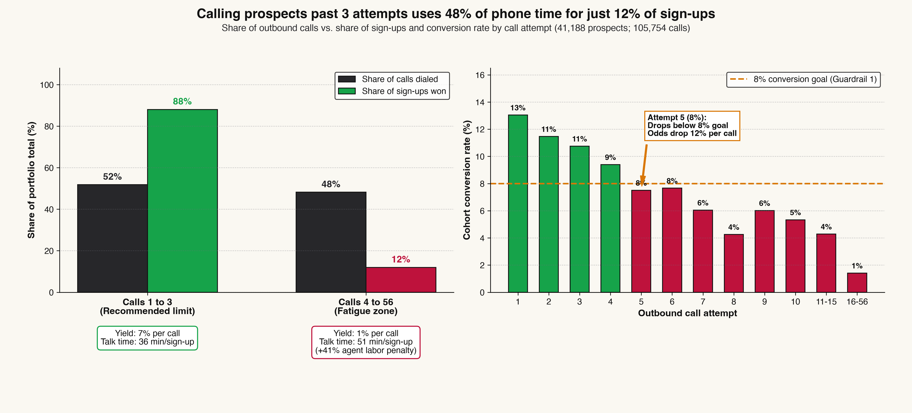
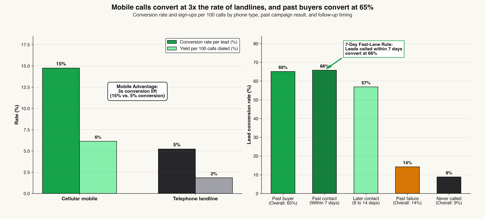
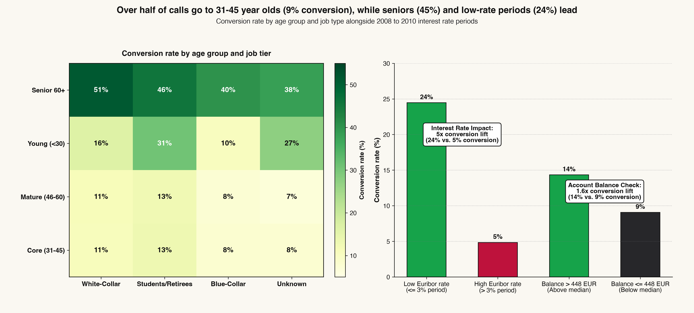
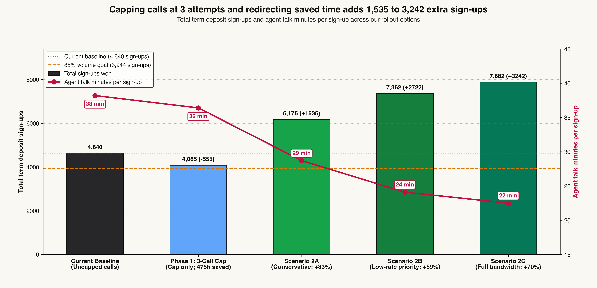

A review of 41,188 customer records and 105,754 outbound phone calls from May 2008 to November 2010, showing how capping repeat calls at 3 attempts saves 475 hours of phone time and adds up to 3,242 extra deposits.
Between May 2008 and November 2010, our bank's call center made 105,754 outbound phone calls to 41,188 prospects to sell term deposits. In total, 4,640 people signed up. That works out to an 11% conversion rate per person, or about 4 sign-ups for every 100 phone calls.
When we looked at how those calls were spread out, two big problems stood out. First, our dialer had no limit on repeat calls, so agents kept calling unresponsive people up to 56 times in a single campaign. Second, more than half of our calls went to working-age adults between 31 and 45, who signed up at the lowest rate of any group (9%).
Agents dialed prospects up to 56 times with no cutoff rule in place.
Stop calling a prospect for the rest of the campaign if they do not sign up by call 3.
Put those saved calls toward mobile phones, past buyers, seniors, and students.
| Executive Question | Findings and Recommended Action |
|---|---|
| What did we find? | Calls 1 to 3 bring in 88% of sign-ups (4,085 deposits). Calls 4 to 56 take up 48% of all phone calls (50,949 dials) but bring in only 12% of sign-ups. |
| Why is this happening? | The dialer has no limit on repeat calls, and 53% of calls go to 31-45 year olds (9% conversion) or landline phones (5% conversion) instead of mobile phones (15%), seniors (45%), and past buyers (65%). |
| What does it cost us? | Agents spend 475 hours of talk time on 4+ call attempts. Winning a sign-up on calls 4 and up takes 51 minutes of phone time compared to 36 minutes on calls 1 to 3 (41% more agent time). |
| What should we change? | Stop calling after 3 attempts (Phase 1), call mobile numbers first and follow up with warm leads within 7 days (Phase 2), and focus call lists on seniors, students, and low interest rate periods (Phase 3). |
Before testing new call center rules, we checked the raw campaign files for common data traps that could skew our numbers. We fixed four specific issues so our recommendations reflect what agents actually know before they pick up the phone.
The raw data tracks how many seconds each phone call lasted. It is tempting to say "longer calls lead to more sales," because calls that end in a sign-up average 9 minutes while "no" calls average 4 minutes. However, an agent cannot know how long a call will last before dialing. We removed call length from our targeting rules and used it only to add up how many hours agents spent on the phone.
In the raw file, 39,673 people (96%) had the number "999" entered for days since last contact. That code simply means they had never been called in an earlier campaign. Instead of letting that 999 number throw off our averages, we split customers into two clear groups: people never called before (9% conversion) and people contacted in an earlier campaign (64% conversion).
We also kept the 10,700 records that had "unknown" listed for credit history, housing loans, or job type rather than deleting them. Tracking them as their own group showed that people with incomplete records convert at just 7%, compared to 13% for customers with complete profiles.
| WHAT WE CHECKED | HOW WE HANDLED IT | WHAT WE FOUND |
|---|---|---|
| Call Length (Duration) | Kept out of targeting rules; used only to count agent work hours. | 2,955 total talk hours (38 min per sign-up). |
| Code 999 (Days Since Last Call) | Separated into 39,673 new leads vs. 1,515 previously called leads. | 64% conversion on past contacts vs. 9% on new leads. |
| Missing Profile Info ('Unknown') | Tracked 10,700 incomplete profiles without guessing missing values. | 7% conversion on incomplete profiles vs. 13% when complete. |
| Bank Balance Check | Checked the 45,211-row companion file containing yearly account balances. | Customers above the 448 EUR median balance convert at 14% vs. 9%. |
Looking at conversion rates by call attempt shows why agents are stretched so thin. While the first 3 calls bring in 88% of all deposits (4,085 sign-ups), agents keep dialing unresponsive prospects up to 56 times. Attempts 4 through 56 use up 48% of all phone calls (50,949 dials) but bring in only 555 sign-ups.
There are two practical ways to count the calls we save by setting a 3-call limit:
1. Stopping after attempt 3 on current lists (Truncated view): If agents still make 3 calls to those 7,635 stubborn prospects before stopping, the call center cuts 28,044 extra calls (27% of all dials).
2. Filtering out low-odds prospects upfront (Upfront view): If we also use our pre-call checklist to skip those 7,635 low-odds prospects before they get stuck in repeat callbacks, we save all 50,949 calls (48% of all dials) and 475 hours of talk time.

A customer's chance of signing up drops steadily with each repeat call. On the 1st call, 13% of people sign up. That drops to 11% on the 2nd call and 11% on the 3rd call. Once agents pass the 3rd attempt, the yield per phone call drops from 7% on calls 1 to 3 down to just 1% on calls 4 and up.
At the same time, agent phone time per deposit climbs sharply. Winning a single sign-up on attempts 4 and up takes 51 minutes of total talk time (counting all the unsuccessful calls along the way), compared to 36 minutes during the first 3 attempts. That is 41% more staff time per deposit.
| ATTEMPT | LEADS | CALLS DIALED | SIGN-UPS | CONV. RATE | YIELD / CALL | MEETS 8% GOAL? |
|---|---|---|---|---|---|---|
| Attempt 1 | 17,642 | 17,642 | 2,300 | 13% | 13% | PASS |
| Attempt 2 | 10,570 | 21,140 | 1,211 | 11% | 6% | PASS |
| Attempt 3 | 5,341 | 16,023 | 574 | 11% | 4% | PASS |
| Attempt 4 | 2,651 | 10,604 | 249 | 9% | 2% | PASS |
| Attempt 5 | 1,599 | 7,995 | 120 | 8% | 2% | FAIL (< 8%) |
| Attempt 6 | 979 | 5,874 | 75 | 8% | 1% | FAIL (< 8%) |
| Attempt 7 | 629 | 4,403 | 38 | 6% | 1% | FAIL (< 8%) |
| Attempts 8 to 10 | 908 | 7,997 | 46 | 5% | 1% | FAIL (< 8%) |
| Attempts 11 to 56 | 869 | 14,076 | 27 | 3% | 0% | FAIL (< 8%) |
Agents dial up to 3 times on active lists and stop if there is no sale.
Pre-call checklist filters out low-odds leads before they enter the repeat loop.
Next, we looked at how agents reach customers and whether the person had bought from us before. Calling a mobile phone converts at 15%, compared to just 5% when calling a home landline (3x higher conversion, even when comparing people of the same age).
Past campaign history is an even stronger signal. Customers who signed up for a deposit in an earlier campaign converted at 65% (36 sign-ups per 100 calls), which is 7x higher than people who had never been called before (9%).
When following up with someone from an earlier campaign, speed matters. Customers called within 7 days converted at 66%, compared to 57% when agents waited 8 to 14 days (a 9 percentage point drop).

Home landlines often go unanswered during work hours or reach someone other than the main account holder. Mobile calls reach the decision-maker directly, lifting sign-ups per 100 calls from 2% on landlines to 6% on mobile.
For warm leads from an earlier campaign, waiting an extra week costs us sales:
* Called within 1 to 7 days: Converts at 66% (36 sign-ups per 100 calls).
* Called after 8 to 14 days: Drops to 57% (32 sign-ups per 100 calls), losing 9 percentage points.
| CUSTOMER GROUP | CALLS DIALED | SIGN-UPS | CONV. RATE | YIELD / 100 CALLS |
|---|---|---|---|---|
| Mobile Phone | 62,877 | 3,853 | 15% | 6% |
| Landline Phone | 42,877 | 787 | 5% | 2% |
| Past Campaign Buyer | 2,483 | 894 | 65% | 36% |
| Called Within 7 Days | 2,123 | 774 | 66% | 36% |
| Called in 8 to 14 Days | 457 | 145 | 57% | 32% |
| Never Called Before | 102,154 | 3,673 | 9% | 4% |
More than half of all calls in our dataset (56,174 dials, or 53%) went to working-age adults between 31 and 45. Yet that group signed up only 9% of the time. Meanwhile, seniors aged 60 and older signed up at 45% (5x higher), and students signed up at 31% (more than 3x higher).
Broader interest rates also play a huge role in when people lock in term deposits. During months when the 3-month Euribor interest rate was 3% or lower, 24% of prospects signed up (12 sign-ups per 100 calls), compared to just 5% when rates were above 3% (a 5x jump).

To see how all of these factors work together without using call length, we scored all 41,188 records using only information known before an agent dials. The results confirm that past buyers, low interest rate periods, seniors, and students are by far our strongest prospects:
* Past Campaign Buyer: 9x higher odds of signing up compared to someone whose past call failed.
* Low Interest Rate Period (<= 3%): 4x higher odds of signing up than during high-rate months.
* Seniors (60+) & Students/Retirees: Nearly 2x higher odds of signing up.
* Landline Phones & 31-45 Age Group: Lower conversion odds by 22% to 31%.
| CUSTOMER OR MARKET TRAIT | ODDS MULTIPLIER | CONV. IMPACT | DIALER ACTION |
|---|---|---|---|
| Past Campaign Buyer | 9x higher odds | 65% conversion | Priority Fast-Lane (Call within 7 days) |
| Low Interest Rate (<= 3%) | 4x higher odds | 24% conversion | Expand outbound call volume |
| Senior Citizen (Age 60+) | 2x higher odds | 45% conversion | Move to top of mobile call queue |
| Students & Retirees | 2x higher odds | 25% to 31% conv | Prioritize over working-age lists |
| White-Collar Jobs | 1.3x higher odds | 11% to 13% conv | Standard mobile outreach (max 3 calls) |
| Higher Bank Balance (> 448 EUR) | 1.6x higher odds | 14% conversion | Prioritize over low-balance accounts (9%) |
| Incomplete Profile ('Unknown') | 23% lower odds | 7% conversion | Hold until contact info is updated |
| Working Age (31 to 45) | 22% lower odds | 9% conversion | Cut call share from 53% and cap at 3 calls |
| Landline Telephone | 31% lower odds | 5% conversion | Use only when no mobile number is on file |
53% of all calls (56,174 dials) go to 31-45 year olds (9% conversion), and 37% of leads are called on landlines (5% conversion).
Shift freed-up calls toward Seniors 60+ (45% conversion), Students (31%), Mobile numbers (15%), and Low-Rate months (24%).
By combining a 3-call limit with better call list targeting, leadership can either bank 475 hours in saved phone time or redirect those saved calls to higher-converting prospects to add 1,535 to 3,242 net new deposits (+33% to +70%) without hiring a single extra rep.
We tested six rollout options across our 105,754 historical call capacity to compare calls saved, sign-ups won, and agent minutes per deposit:

| ROLLOUT OPTION | CALLS DIALED | CALLS SAVED | SIGN-UPS WON | NET CHANGE | YIELD / 100 CALLS | TALK HOURS SAVED | MIN / SIGN-UP |
|---|---|---|---|---|---|---|---|
| Option 0: Current Baseline (No Cap) | 105,754 | 0 | 4,640 | 0 | 4% | 0 hours | 38 min |
| Option 1A: 3-Call Cap (Upfront Filter) | 54,805 | 50,949 (48%) | 4,085 | -555 (88% kept) | 7% | 475 hours | 36 min |
| Option 1B: 3-Call Cap (Stop After Call 3) | 77,710 | 28,044 (27%) | 4,085 | -555 (88% kept) | 5% | 475 hours | 36 min |
| Option 2A: Redirect 28k Saved Calls (Standard 7% Yield) | 105,754 | 0 (Reinvested) | 6,175 | +1,535 (+33%) | 6% | Reinvested | 29 min |
| Option 2B: Redirect 28k Saved Calls (Low-Rate 12% Yield) | 105,754 | 0 (Reinvested) | 7,362 | +2,722 (+59%) | 7% | Reinvested | 24 min |
| Option 2C: Redirect All 51k Saved Calls (Upfront Filter) | 105,754 | 0 (Reinvested) | 7,882 | +3,242 (+70%) | 7% | Reinvested | 22 min |
| ROLLOUT PHASE | WHAT WE DO | WHO IT COVERS | TEAM OWNER | EXPECTED RESULT |
|---|---|---|---|---|
| Phase 1: Days 1 to 30 | Cap Calls at 3 Attempts: Set the dialer to stop calling a lead after 3 unsuccessful attempts. | All prospects reaching call 3 without signing up (7,635 leads; 50,949 calls). | Call Center Operations Manager | Frees up 28,044 to 50,949 calls, saves 475 talk hours, and keeps 88% of sign-ups. |
| Phase 2: Days 30 to 60 | Mobile-First & 7-Day Callback Rule: Dial mobile numbers first and call past buyers within 7 days. | Prospects with mobile numbers (26,144 leads) and past contacts (1,515 leads). | CRM & Dialer Routing Team | Lifts channel conversion from 5% to 15% (3x) and captures 65% conversion on past buyers. |
| Phase 3: Days 60 to 90 | Update Call List Priority: Shift call share toward Seniors 60+, Students, and low-rate periods. | Seniors (45% conversion), Students (31%), and months when Euribor is 3% or below (24%). | VP of Growth Marketing | Adds 1,535 to 3,242 net new sign-ups (+33% to +70%) and cuts talk time to 22 minutes per deposit. |
* Protecting Customers from Annoying Repeat Calls: Stopping at 3 calls prevents reps from calling the same customer 10 to 50+ times and reduces customer complaints.
* Keeping Our 8% Conversion & 85% Volume Goals: Every rollout option keeps conversion well above our 8% minimum goal and keeps total sign-ups above 85% of baseline.
* Pacing Campaigns Around Interest Rates: Marketing checks the 3-month Euribor rate each week to ramp up outbound calling when rates drop to 3% or lower.